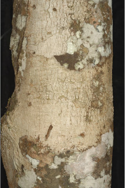

Images :



| Habit : | Trees up to 15 m tall. |
| Leaves : | Leaves simple , alternate , spiral , clustered at twig ends; stipules ovate , caducous ; petiole 1-2.5 cm long, planoconvex in cross section; lamina 12-26 (-50) x 3-7.5 cm, long oblanceolate , apex bluntly acuminate , base cuneate and decurrent , margin entire , coriaceous , drying brownish; midrib stout, distinctly raised on both surface; secondary_nerves 12-18 pairs, impressed above; tertiary_nerves slender and closely_horizontally_percurrent . |
| Inflorescence / Flower : | Inflorescence axillary spikes ; flowers unisexual , dioecious ; male flowers sessile , 3-5 together within a bract ; female flowers solitary within a bract . |
| Fruit and Seed : | Capsule , trilocular , to 1 cm across; seeds 1 per locule . |